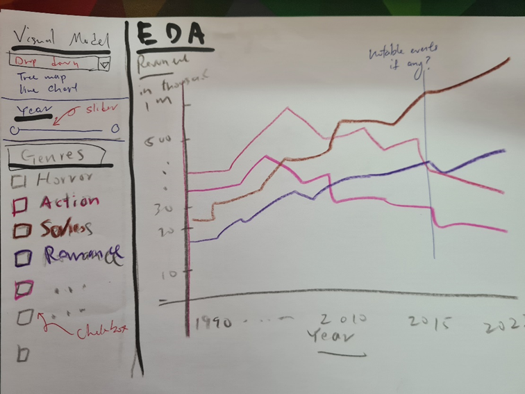
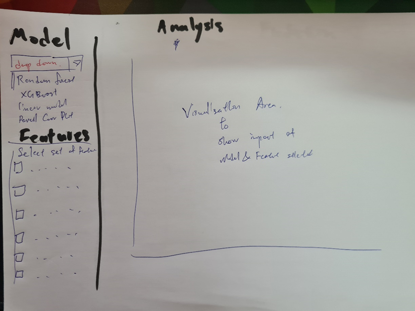
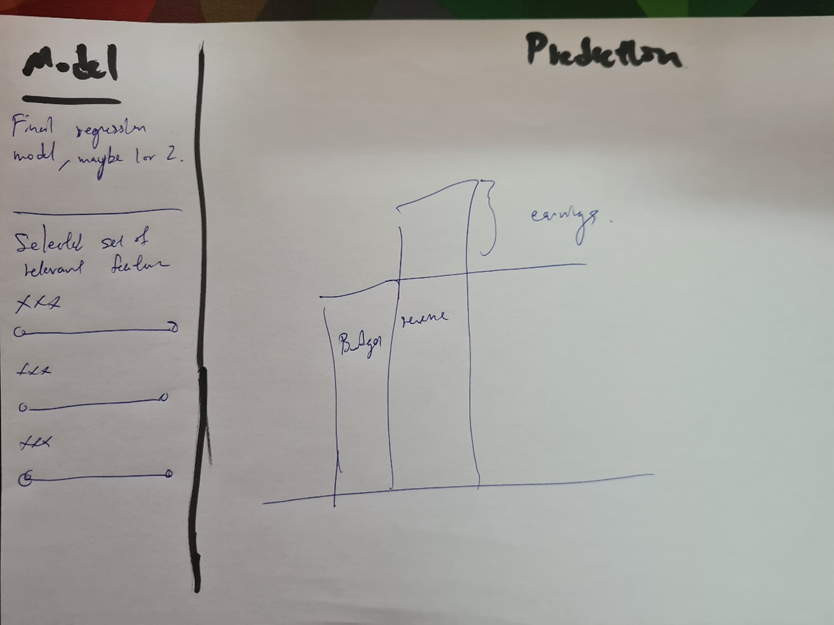

ISSS608 - Group 13 - Project Proposal
Movie Analysis and Prediction for Business Insights
Background
The movie industry is constantly evolving, with new films being produced and released every year. To understand the current state of the industry and predict future trends, movie trend analysis is an essential tool. By analyzing various data sources such as box office performance, critical reception, and audience demographics, analysts can gain insights into the popularity of different genres, production techniques, and marketing strategies. This information can then be used by film studios, production companies, and investors to make informed decisions about future projects. Additionally, movie trend analysis can help movie theaters and streaming platforms plan their schedules and allocate resources to maximize their profits. With the increasing amount of data being generated in the movie industry, movie trend analysis has become an important tool for staying ahead of the curve and predicting the next big hit.
Motivation
There are several motivations behind the development and use of movie trend analysis tools. These include:
To Improve Decision-Making: Movie trend analysis provide valuable insights into the current state of the movie industry, helping individuals and organizations make informed decisions about future projects.
To Identify Opportunities: By identifying trends and patterns in the data, movie trend analysis tools can help users identify new opportunities for success in the industry.
To Maximize Profits: By understanding the success factors of different films and genres, movie trend analysis tools can help movie theaters, production companies, and investors maximize their profits.
Objectives
The project was interested in the following problems.
To identify features of movies that are more popular in recent years. This can facilitate decision-making for companies that may be interested in investing in movie projects.
To apply regression models in an attempt to predict the ROI of a particular movie project given various feature data, like genre, budget, etc.
(Dropped) To identify if the increasing popularity of Over-The-Top (OTT) services and implementation of COVID measures had impacted people’s movie viewing habits, over the past 5 years. This objective was subsequently dropped during development due to incomplete crucial data (we were missing data from 2021 to 2022) which was crucial as COIVD had help sped up the demand for OTT services. the team was also short on time due to difficulties in developing a correlation model for categorical and numerical values.
Data Set
To analyze and plot the required graphs, these are the data set and their description that our team will be exploring:
• Movies.csv: To retrieve all movie information like release year, box office revenue, etc.
• Multiple revenue.csv: revenue data of various major OTT Platforms, like Netflix, Hulu, and other major streaming apps in China, US and UK
• Multiple Subscriber.csv: subscription data of various major OTT Platforms, like Netflix, Hulu, and other major streaming apps in China, US and UK
Project Visualizations
EDA
the project had intended to allows users to select different kinds of visualisation models as well as toggle the years to display how the various genres fared in terms of revenue. This flexibility for toggling attributes was intended to work like how JMP allows one to select different features to view.
The visualisations that the team finally decided on are:
Time series line plots for Movie revenue, budget, gross profits by year
Bar Plots ranking of the number f movies released in a year for each genres.

Analysis
On a 2nd tab, we will allow the use to select various regression modeling techniques as well as toggle selected features to view the significance of the features on the ROI of movies.
The visualisations that the team ultimately decided on are:
Box plots comparisons between Revenue and Genres
Box plots comparisons between Budget and Genres
Box plots comparisons between Revenue and Production Houses
Box plots comparisons between Budget and Production Houses

Prediction
In a final tab, we would like just 1 or 2 of the best regression model and allow the user to key in various parameters to determine if a movie would make money.
For Prediction, the team decided to show:
The final predicted value (in red) against a scatter plot of all the revenue
- The prediction will take in up to 5 genres and a budget to predict the reveune.
Another bar plot is to show the historical means of revenue across all genres.

Challenges Faced
Provided here is a list of challenges that team faced in the development of this project. this list provides an idea of what to expect and what could be done better if this project were to be revisited in the future.
- Correlation between multiple categorical values and numerical values. Correleation traditionally works best with continous numerical values. while there are methods for carrying out this correleation today, they do not work well with our data sets. Here is an analysis of the reasons
- Our data has alot of categoriacal data like actors and production houses
- Some movies can have upwards of 60 actors and 3 production houses.
- As we translate each o f this categorical values into numerical value by giving them a 1 or 0 flag for each movie, the data set size increases exponentialy both in terms of width and length. after converting unnesting all these variables, we ended up with 2.7million rows of data compared to the original 8k+. At one point, the system informed us that we required 27TB of memory to run the functions for correlation, which the team obviously failed to execute
- Collaboration with Github. From the team’s experience, using Github is causing us more trouble than it is helpful. while the team remains convinced that Github is a useful platform for teams to collaborate on a project, there must be pre-planning and ideally familiarity with how the platform works and how to troubleshoot it when it does not, otherwise more time could be wasted on trying to fix these issues and recover codes that were wrongly meshed.
- The project requires diverse knowledge in multiple platforms and languages which required alot of time to get familiar with. Teams should start on such projects as early as possible. R was used in the data wrangling and analysis as well as visualisations. some Quarto and html knowledge is required for designing the webpage. Knowledge in Git commands may also be necessary for some troubleshooting.